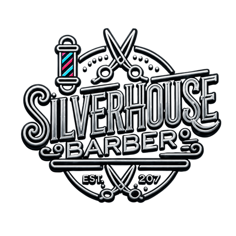
Cómo recibir y confirmar las reservas de tu página, ver cuánta gente la visita y de dónde llega, desde la compu o el celular.
Las imágenes del dashboard muestran reservas y visitas de ejemplo. Tus números y tus clientes van a ser otros.
Tu página web tiene un reservador de 5 pasos. El cliente elige el paquete, el barbero, el día y el horario, deja su nombre y toca Confirmar por WhatsApp. En ese momento pasan dos cosas a la vez:
Además, cada vez que alguien abre tu página se cuenta una visita. En el dashboard ves cuántas personas entraron, desde qué celular o compu y de dónde llegaron: Instagram, Google, Facebook o directo.
| Tu página web | Muestra los paquetes y precios, toma la reserva y abre WhatsApp. Funciona sola las 24 horas. |
| Es donde hablás con el cliente y le confirmás el turno, con un mensaje que ya va escrito. | |
| Tu correo | Te avisa de cada reserva nueva, con un botón para confirmarla por WhatsApp. |
| El dashboard | Tu agenda de reservas, los comprobantes para imprimir y las visitas de la página. Entrás en app.taparuba.com/silverhouse/dashboard. |
| Tap Aruba | Mantiene la página y el dashboard, y hace los cambios que pidas: precios, horarios, fotos y textos. |
Así se ve el reservador en el celular, que es desde donde reserva casi todo el mundo. Conviene conocerlo para poder ayudar a un cliente que se traba.
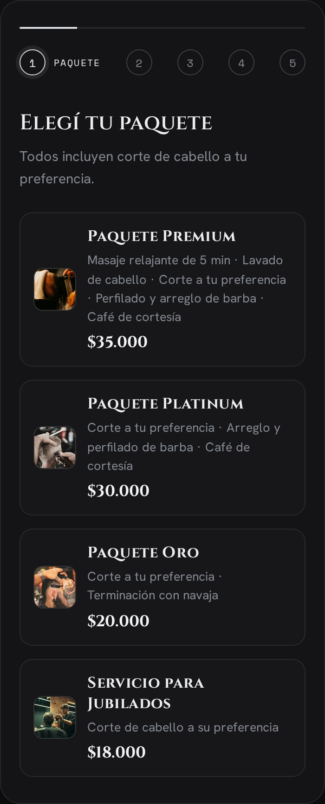
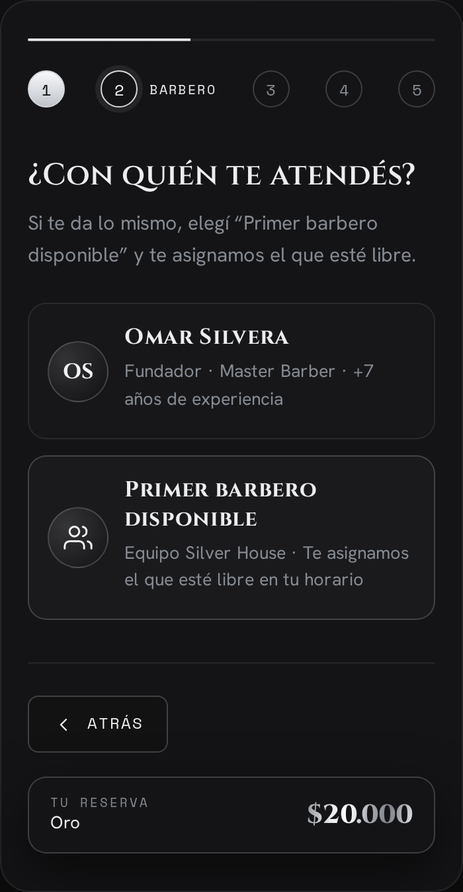
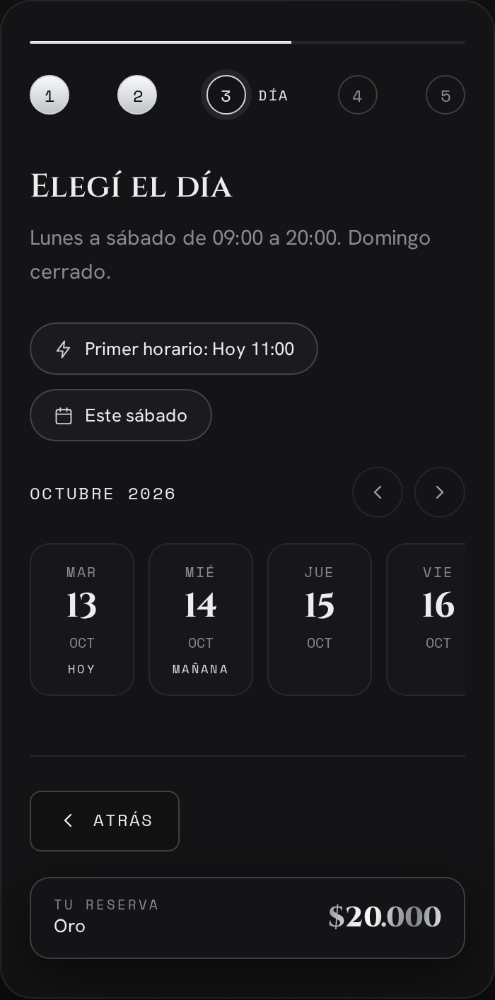
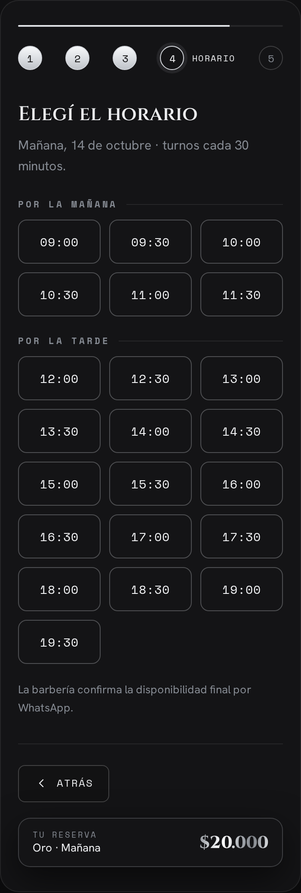
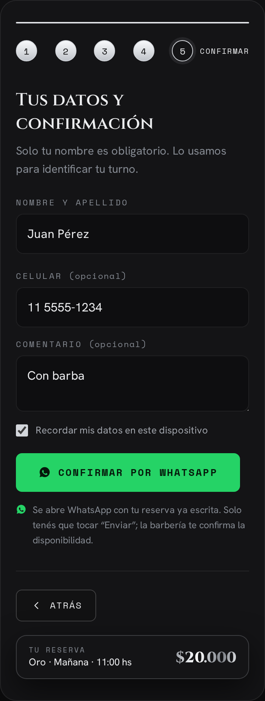
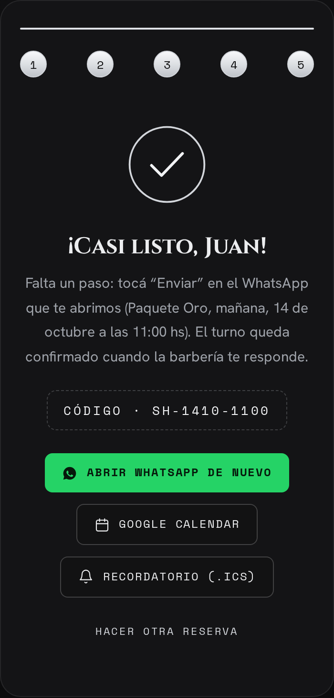
Tu dashboard tiene su propia entrada, con tu logo y en español. La primera vez creás tu contraseña vos mismo: te llega un código a tu correo.
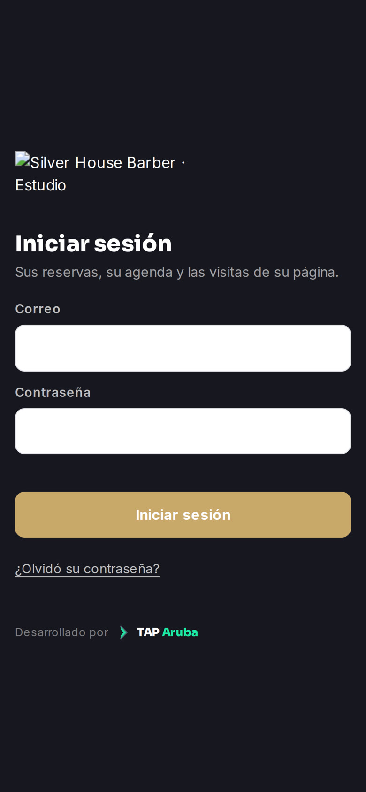
Cuando abrís cada sección por primera vez, se abre a la derecha ¿Cómo funciona?, una guía corta con ejemplos de lo que vas a ver. Tocá Entendido para cerrarla. La volvés a abrir cuando quieras con el botón ¿Cómo funciona? de arriba.
Una vez que entraste, el dashboard deja la sesión abierta en ese aparato. Solo te vuelve a pedir la contraseña si tocás Cerrar sesión, y en ese caso te devuelve a tu misma pantalla de entrada.
Son los mismos pasos de la primera vez: ¿Olvidó su contraseña?, después el código que te llega por correo y por último la contraseña nueva.
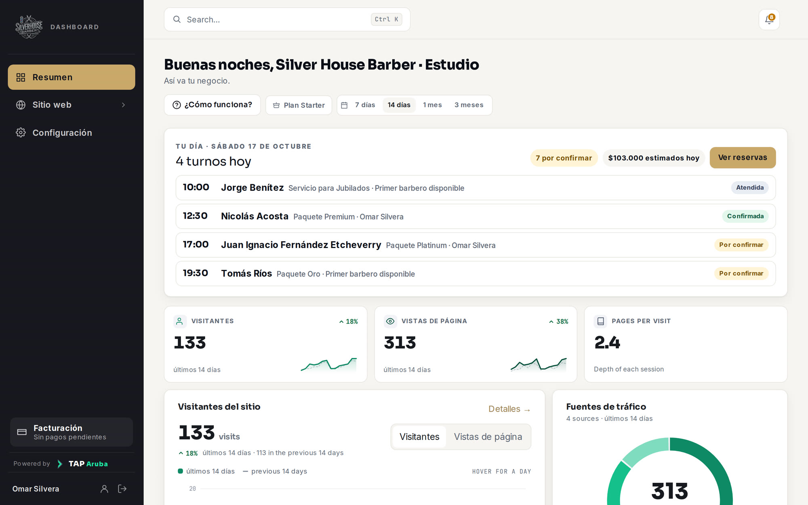
| Resumen | La pantalla de inicio: Tu día, con los turnos de hoy, y cómo le va a tu página. |
| Sitio web | Las visitas de tu página en los últimos 30 días. |
| Reservas | Tu agenda. Cada turno que toman en tu página, por día, para confirmarlo, imprimirlo y marcarlo como atendido. Está adentro de Sitio web. |
| Clientes potenciales | Todo lo que llega desde tu página, guardado como mensaje. |
| Configuración | Los avisos por email, el modo claro u oscuro y los datos del negocio. |
| Soporte | Para pedirle cambios o ayuda a Tap Aruba. |
| Facturación | Tu plan con Tap Aruba. |
| La campanita | Arriba a la derecha: las reservas de los últimos 7 días, con un número cuando hay nuevas. |
Con el dashboard tenés la agenda del día a mano y no se te pierde ninguna reserva.
Abrí el dashboard: en Tu día ves los turnos de hoy en orden y cuántos esperan tu confirmación. Si querés la lista en papel, tocá Agenda de hoy en Reservas.
Te llega un email con todos los datos y, si el cliente tocó Enviar, también su WhatsApp. Tocá Confirmar por WhatsApp y mandale el mensaje, que ya va escrito.
Cuando termina un corte, marcalo como Atendida. Si una reserva sigue Por confirmar, escribile al cliente: es alguien que casi reserva.
Mirá los turnos de mañana en Reservas. Una vez por mes descargá el Excel para tener tus números.
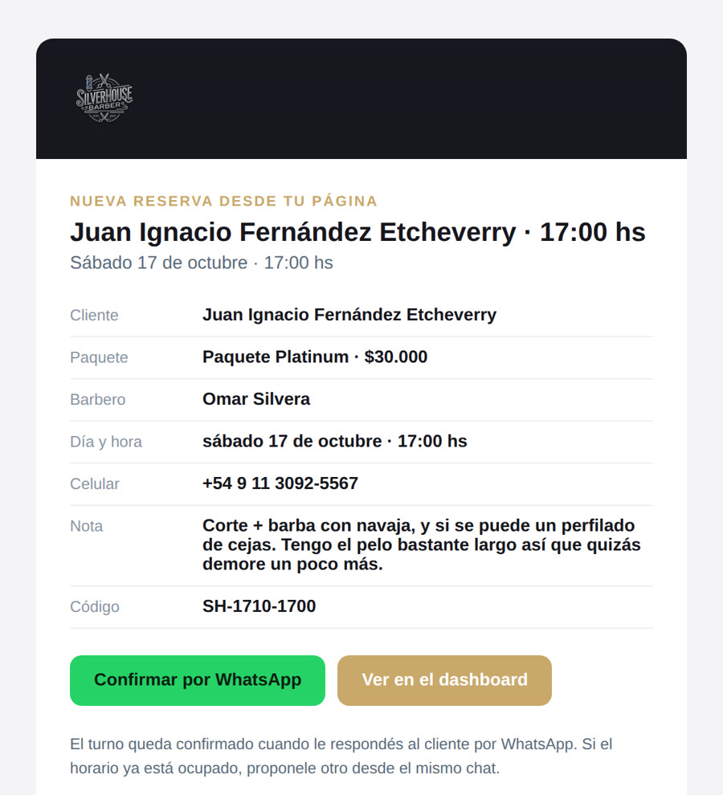
Te llega un email que dice Nueva reserva, con el cliente, el paquete, el barbero, el día y la hora. Si el cliente tocó Enviar, también te escribe por WhatsApp.
En Reservas fijate que ese horario esté libre. La página no sabe los turnos que diste por teléfono o en persona.
| Otro horario | “¡Hola [nombre]! A las [hora] ya tenemos turno. ¿Te sirve a las [hora 1] o a las [hora 2]?” |
| Cancelar | “¡Hola [nombre]! Perdón, ese día no vamos a poder atenderte. ¿Querés que te busquemos otro día?” |
Usá WhatsApp en la reserva para abrir el chat sin mensaje. Si cancelás, tocá Cancelar en la reserva para que no te ocupe la agenda.
En el menú tocá Sitio web y después Reservas. Están todos los turnos que tomaron en tu página, ordenados por día: Hoy, Mañana y los días siguientes.
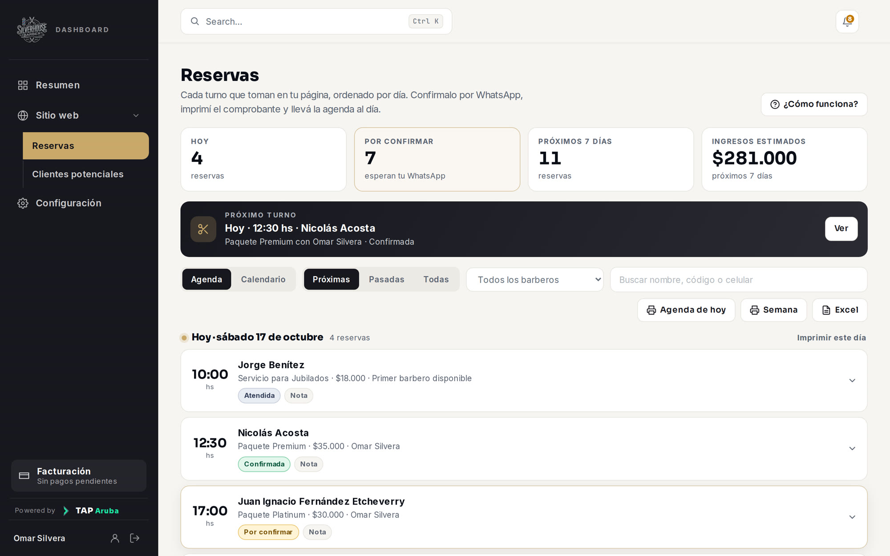
| Arriba | Los turnos de Hoy, los que están Por confirmar, los de los Próximos 7 días y los Ingresos estimados de esa semana. |
| Próximo turno | La franja oscura te dice quién sigue. Tocá Ver para abrirlo. |
| Cada tarjeta | La hora, el cliente, el paquete con su precio, el barbero y el estado. |
| Por confirmar | Todavía no le respondiste al cliente. |
| Confirmada | Ya le mandaste la confirmación por WhatsApp. |
| Atendida | El cliente vino. Marcala después del corte. |
| Cancelada | No viene. Queda en la lista, en gris. |
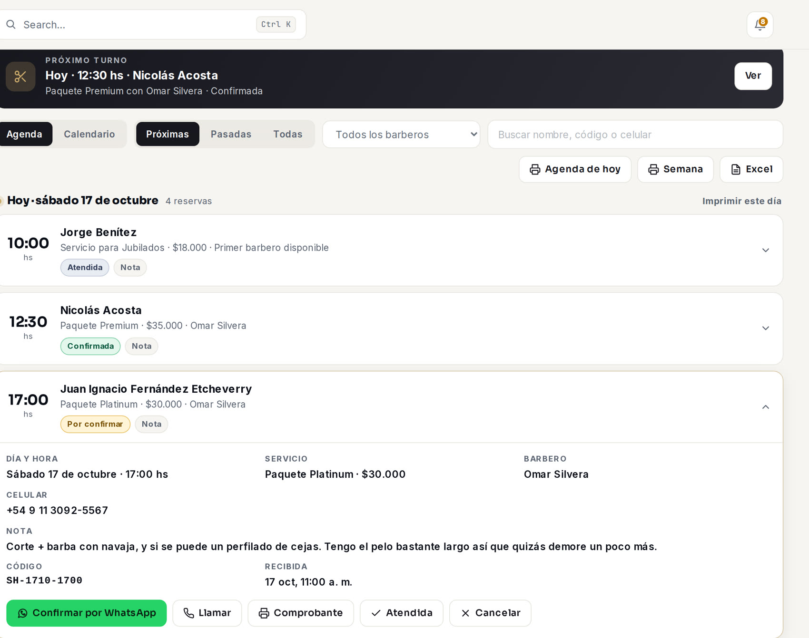
| Confirmar por WhatsApp | Abre el chat con la confirmación escrita y la marca Confirmada. |
| WhatsApp · Llamar | Para escribirle o llamarlo. |
| Comprobante | Imprime o guarda en PDF el comprobante del turno (capítulo 8). |
| Atendida · Cancelar | Cambian el estado. Reabrir lo vuelve atrás si te equivocaste. |
Tocá Calendario para ver el mes entero. Cada turno es un cuadradito de color: amarillo, por confirmar; verde, confirmado; gris, atendido. Tocá uno y te lleva a esa reserva.
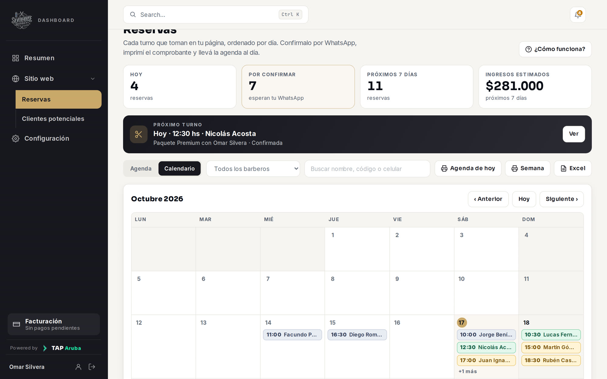
| Próximas · Pasadas · Todas | Qué turnos ver. Empieza en Próximas. |
| Barbero | Para ver la agenda de un solo barbero, cuando haya más de uno. |
| Buscar | Por nombre, código o celular. |
Agenda de hoy y Semana, arriba en Reservas, imprimen la lista de turnos con la hora, el cliente, el paquete, el barbero y el estado, más el total estimado. Cada día también tiene su Imprimir este día.
Excel descarga todas las reservas que estás viendo, para llevar tus números o pasárselos a tu contador.
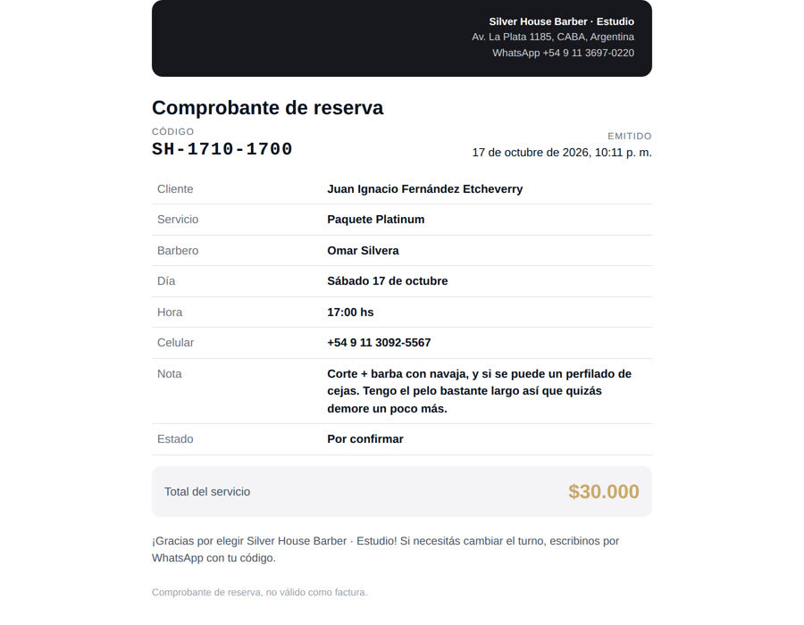
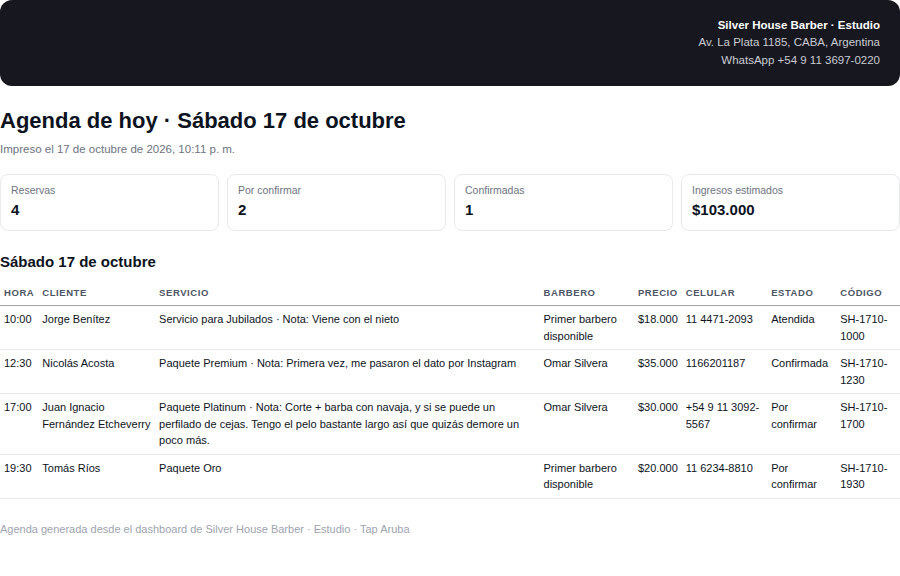
Es lo primero que ves al entrar.
| Tu día | Los turnos de hoy en orden, con su estado, cuántos faltan confirmar, lo que suman hoy y el próximo turno. Tocá uno para abrirlo, o Ver reservas para ir a la agenda. |
| Visitantes | Cuántas personas entraron a tu página. El porcentaje compara con el período anterior, que elegís arriba: 7 días, 14 días, 1 mes o 3 meses. |
| Vistas de página | Cuántas veces se abrió la página. |
| Fuentes de tráfico | De dónde llegaron: Instagram, Google, Facebook o directo. |
| Actividad reciente | Las últimas reservas que entraron. |
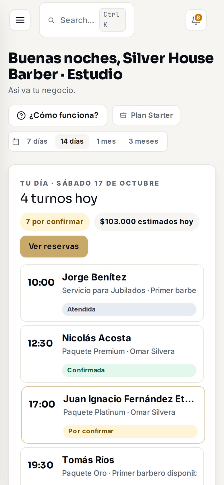
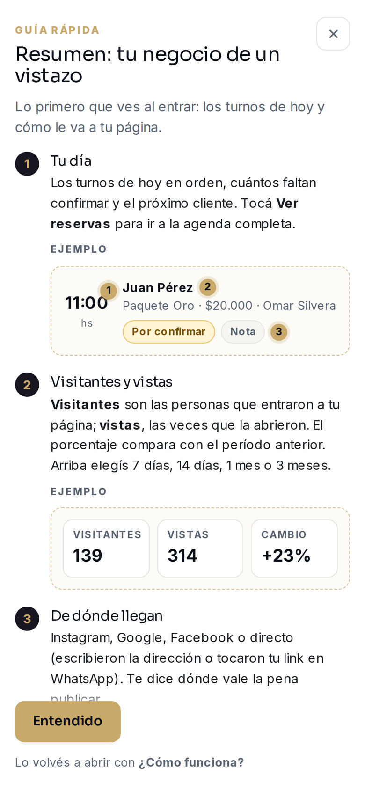
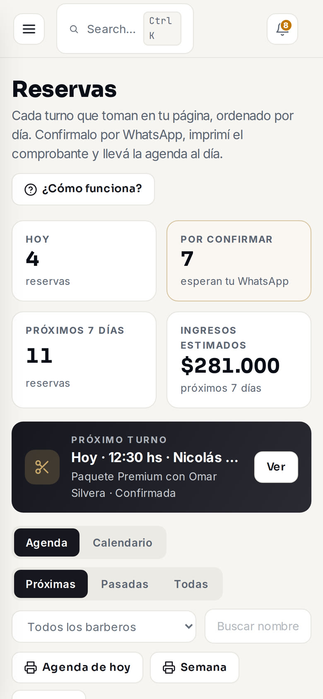
Acá queda guardado, como mensaje, todo lo que llega desde tu página: también las reservas. Te sirve de respaldo y para encontrar a alguien rápido. Las reservas en sí manejalas en Reservas.
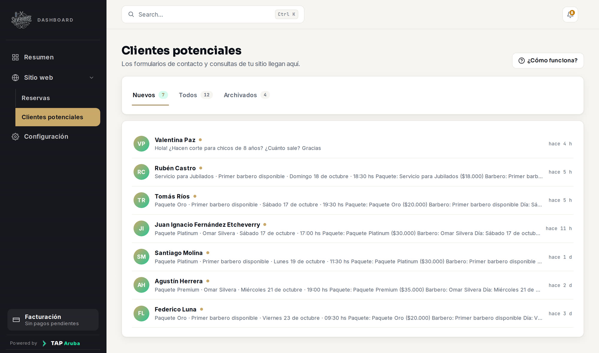
| Nuevos · Todos · Archivados | Nuevos son los que todavía no abriste; el punto verde los marca. |
| Abre el chat con el cliente. | |
| Archivar · Eliminar | Archivar lo saca de la lista. Eliminar lo borra para siempre. |
Tocá Sitio web en el menú. Siempre muestra los últimos 30 días.
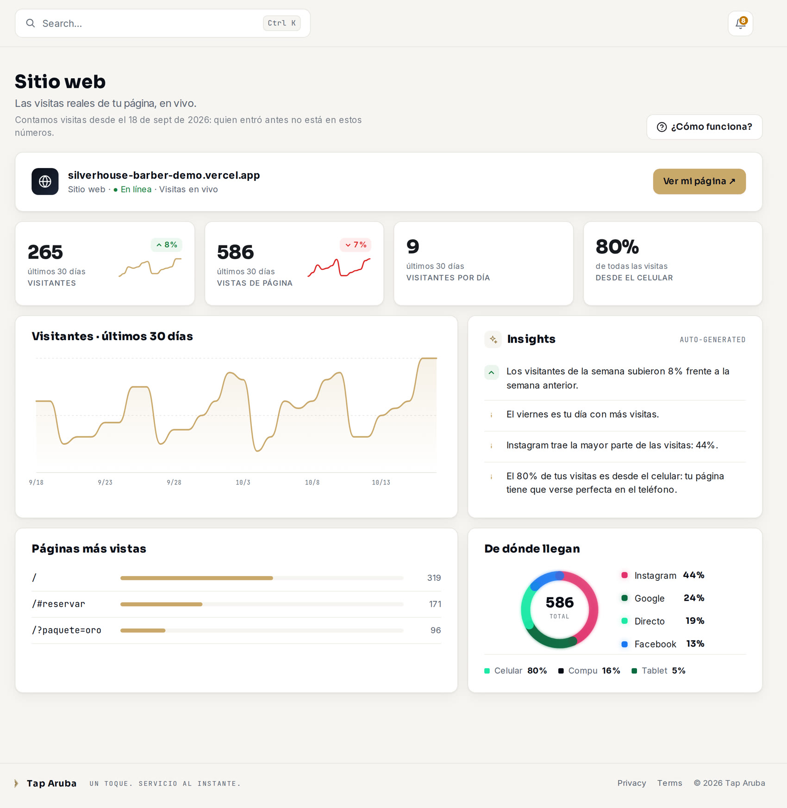
| Visitantes | Personas distintas que entraron. El porcentaje compara esta semana con la anterior. |
| Vistas de página | Cuántas veces se abrió. |
| Desde el celular | Qué parte de las visitas fue desde un teléfono. |
| Páginas más vistas | Por qué link entraron: / es la página normal, /#reservar el link de reservar y /?paquete=oro el link directo a un paquete (capítulo siguiente). |
| De dónde llegan | Instagram, Google, Facebook o Directo: escribieron la dirección o tocaron tu link en WhatsApp. |
Estos links abren tu página directo en el lugar justo. Usalos en la bio de Instagram, en historias, en estados de WhatsApp o cuando alguien te pregunta precios. En Páginas más vistas vas a ver cuál trae más gente.
| Tu página | silverhouse-barber-demo.vercel.app |
| Reservar | silverhouse-barber-demo.vercel.app/#reservar Abre directo el reservador. |
| Paquete Premium | silverhouse-barber-demo.vercel.app/?paquete=premium |
| Paquete Platinum | silverhouse-barber-demo.vercel.app/?paquete=platinum |
| Paquete Oro | silverhouse-barber-demo.vercel.app/?paquete=oro |
| Jubilados | silverhouse-barber-demo.vercel.app/?paquete=jubilados |
Con el link de un paquete, el cliente cae en el reservador con ese paquete ya elegido y arranca directo en el paso 2, el barbero.
El link de Reservar. Es el que más reservas trae.
Una foto de un corte con el sticker de link al paquete que usaste, por ejemplo Paquete Oro.
Cuando te preguntan precios por WhatsApp, mandá Tu página: ven todo y reservan solos.
El link de Jubilados para grupos del barrio o para los hijos que reservan por sus padres.
El dashboard funciona igual en el celular. El menú se abre con el botón ☰ de arriba a la izquierda.
| iPhone | Abrí app.taparuba.com/silverhouse/dashboard en Safari, tocá Compartir (el cuadrado con la flecha) y elegí Agregar a inicio. |
| Android | Abrí app.taparuba.com/silverhouse/dashboard en Chrome, tocá los ⋮ de arriba a la derecha y elegí Agregar a la pantalla principal o Instalar app. |
Te queda el ícono de Silver House en la pantalla del celular. Lo abrís y caés directo en tu dashboard.
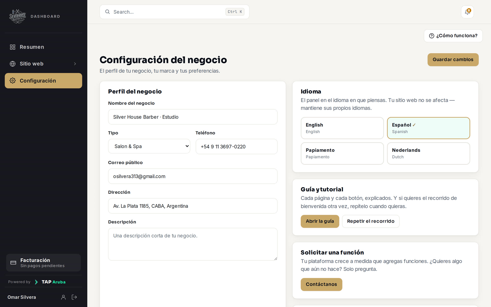
| Notificaciones | Con Nuevas solicitudes de clientes encendido, cada reserva nueva te llega por email. Viene encendido. |
| Idioma | Ya está en español. Si lo cambiás, el cambio vale solo para ese aparato. |
| Apariencia | Claro u Oscuro, también por aparato. |
| Perfil del negocio | Teléfono, correo, dirección y descripción del negocio dentro del dashboard. No cambian tu página web: para eso, mirá el capítulo 15. |
| Marca | El logo y el color de tu dashboard. Ya vienen puestos: no hace falta tocarlos. |
Si cambiás algo, tocá Guardar cambios arriba a la derecha.
Tocá tus iniciales y elegí Tu perfil. Ahí cambiás tu nombre y tu contraseña. También podés activar la verificación en dos pasos, que además de la contraseña te pide un código de una app del celular, como Google Authenticator.
Los precios, horarios, fotos y textos de la página los cambia Tap Aruba. Escribinos por WhatsApp con lo que necesitás y lo cambiamos.
| Precios | El paquete y el precio nuevo. Por ejemplo: “Paquete Oro pasa a $22.000 desde el lunes”. |
| Qué incluye un paquete | El paquete y la lista nueva de servicios, con la duración. |
| Horarios | Días y horas de atención. Hoy son de lunes a sábado, de 9:00 a 20:00, y el último turno es a las 19:30. |
| Feriados y vacaciones | Las fechas en que no atendés, con unos días de anticipación, para que no se puedan reservar. |
| Barberos | Nombre y especialidad de quien se suma, para que aparezca en el paso 2 del reservador. |
| Fotos | Las fotos, con buena luz. Las mejores son de cortes terminados y del local. |
| Textos y reseñas | El texto nuevo, o la captura de una reseña de Google que quieras mostrar. |
| WhatsApp del negocio | El número nuevo, si cambia. Es a donde llegan las reservas. |
En Soporte tenés dos formas de hablar con Tap Aruba:
| +297 744 4271. Es lo más rápido. Respondemos en pocas horas. | |
| Ticket | + Nuevo ticket: escribís el asunto, los detalles y la prioridad, y tocás Submit ticket. Queda registrado en Tus tickets. |
| Correo | arubatap@gmail.com |
En Facturación ves tu plan y lo que incluye. Para cambiar de plan o consultar por un pago, tocá Cambiar plan o Pregunta de facturación y te llevamos a Soporte.
¿Cuando aparece en Reservas, el turno ya está confirmado?
No. Aparece Por confirmar. Queda confirmado cuando le mandás el WhatsApp al cliente con Confirmar por WhatsApp.
Hay una reserva que nunca me llegó por WhatsApp. ¿Por qué?
El cliente tocó Confirmar por WhatsApp en tu página, pero después no tocó Enviar. Igual te llegó el email y está en Reservas. Si dejó su celular, escribile vos.
¿Me llega un aviso cuando alguien reserva?
Sí, un email con cada reserva nueva, con el botón para confirmarla. Si no te llega, revisá Spam y que en Configuración esté encendido Nuevas solicitudes de clientes.
Dos clientes eligieron el mismo horario. ¿Qué hago?
Respetá al primero que reservó y al segundo proponele otro horario. Tenés el mensaje para copiar en el capítulo 6.
¿Puedo cerrar un día por feriado o vacaciones?
Sí. Avisanos las fechas con unos días de anticipación y las cerramos en la página.
¿El comprobante es una factura?
No. Es el comprobante de la reserva, con el servicio, el día y el total. Te sirve para el cliente y para tu control.
Marqué una reserva como Atendida o Cancelada por error.
Abrila y tocá Reabrir: vuelve a Por confirmar.
¿Qué pasa si elimino un mensaje en Clientes potenciales?
Se borra para siempre, y también la reserva. Si solo querés sacarlo de la lista, usá Archivar.
¿Mis propias visitas a la página cuentan?
Sí. Cada aparato cuenta como un solo visitante, aunque abra la página muchas veces. Así que tu celular suma uno, y nada más.
Me olvidé la contraseña.
En tu pantalla de entrada tocá ¿Olvidó su contraseña?. Te llega un código por correo para crear una nueva.
¿Puede entrar otra persona del equipo?
Por ahora el dashboard tiene un solo acceso, el tuyo. Si querés que alguien más lo vea, consultanos.
¿Con quién hablo si algo no funciona?
Con Tap Aruba, por WhatsApp al +297 744 4271. Mandanos una captura de pantalla de lo que ves y lo resolvemos.